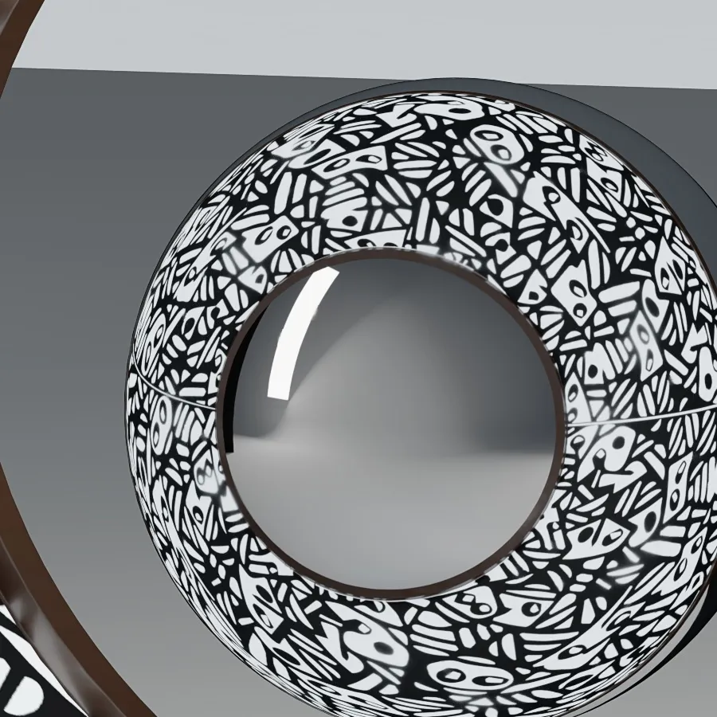
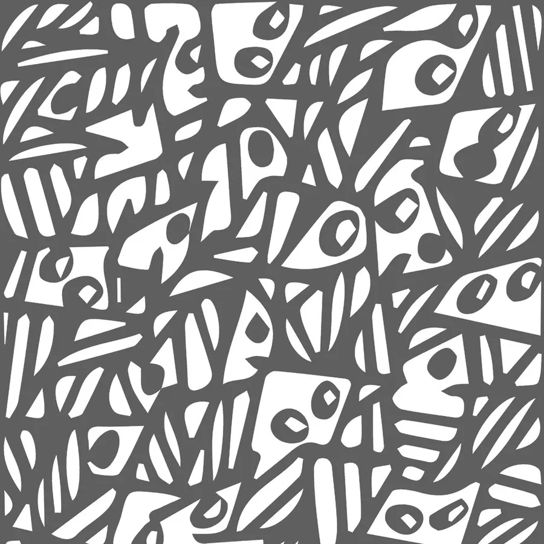
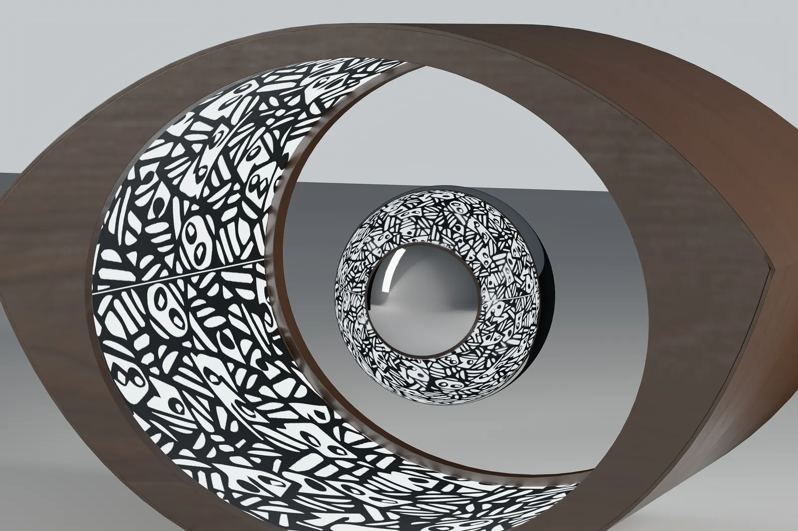
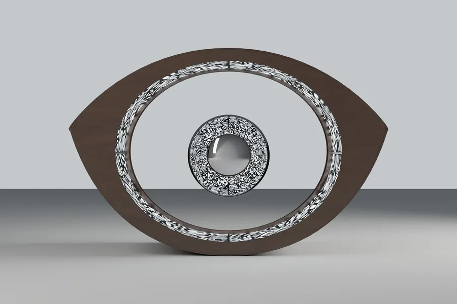
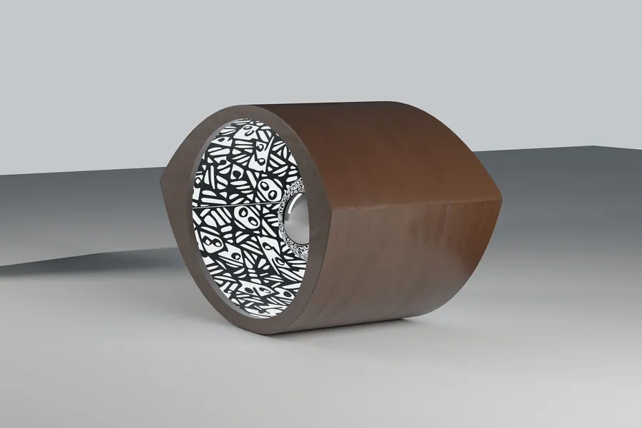

09 / 10 — lampada da tavolo2017
Oopar
Una lampada da tavolo che racconta la sospensione: al centro una sfera cromata fluttua in un campo magnetico e riflette la luce del corpo. Forme e decori nascono dall’incrocio tra cultura italiana e indiana.
- progetto
- Leandro Henriquez, Rucina Jogani
- premio
- 1° Pending Cultures
- materiali
- noce, acciaio cromato
- misure
- 300 × 195 × 200 mm

01 — La sfera
Ø 90, sospesa
Una sfera cromata di 90 mm fluttua nel campo magnetico, al centro dell’occhio, e riflette la luce che esce dal corpo.

02 — Il decoro
Madhubani
La fascia interna porta un decoro ispirato alla pittura Madhubani: è il punto in cui si incontrano la cultura indiana e quella italiana.


03 — Il corpo
Noce, a occhio
Il guscio in noce ha la forma di un occhio con i fianchi concavi; la luce esce dalla fascia dentro il tunnel.


schedadal modello Rhino
larghezza300 mm
altezza195 mm
profondità200 mm
sferaØ 90 mm
corpoNoce
sferaCromo
parti4
premio1° Pending Cultures
prossimo progetto — 10 / 10→
La Fornace